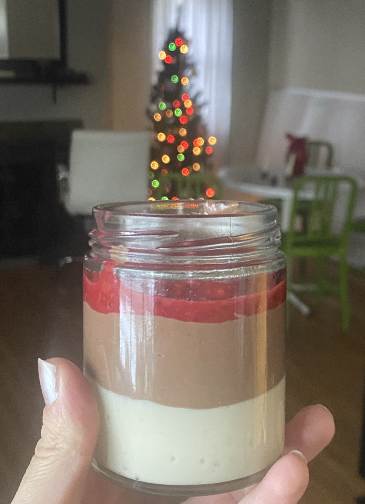

Ingredients
For White Chocolate Layer
- ½ block silken tofu
- 3.5 oz / 100 g white chocolate
- 1 tsp vanilla extract
- 1 tbsp agave syrup or 1 softened date
For Dark Chocolate Layer
- ½ block silken tofu
- 3.5 oz / 100 g dark chocolate
- 2 tbsp cocoa powder
- 1 tbsp agave syrup or 1 softened date
- ¼ tsp sea salt
For Raspberry Layer
- ½ cup raspberries, frozen or fresh
- 1 tbsp maple syrup
- 1 tsp vanilla
- 1 tsp orange zest (optional)
- 1 tbsp cornstarch or 1 tsp agar agar
Instructions
- Melt the white chocolate.
- Blend all of the ingredients for the white chocolate layer and divide into small containers/jars. Let set in fridge.
- Melt the dark chocolate.
- Blend all of the ingredients for the dark chocolate layer and add on top of the white chocolate layer. Let set in fridge.
- Combine the ingredients for the raspberry layer in a saucepan and simmer over low heat until thickened. Add the raspberry mixture on top of the chocolate mousse. Let set some more in the fridge and enjoy!